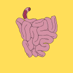

- Fats are a type of nutrient that you get from your diet. They are a source of energy and help your body absorb vitamins.
- Digestion, mobilization, and transport of fats occur in the mouth/stomach, small intestine, adipocytes, and blooD.

- Digestion begins in the mouth/stomach with lingual and gastric lipases, mainly occurring in the small intestine with pancreatic lipases aided by bile salts.
.png)
.png)
- Products from digestion form micelles, which diffuse into enterocytes, re-esterify into triglycerides, and finally pack into chylomicrons, and enter lymphatic blood.
.png)
- Lipase in adipocytes activates by glucagon/epinephrine, liberating fatty acids and glycerol. Fatty acids bind albumin for transport.
.png)
- Chylomicrons are molecules that carry dietary fats, VLDL transports endogenously made triglycerides, and LDL/HDLs handle cholesterol. Free fatty acids circulate bound to albumin.
- Oxidation of fatty acids occurs in mitochondria (and peroxisomes/ER for special cases), breaking down fatty acids into acetyl-CoA, NADH, and FADH₂.
.png)
- Fatty acids break down into acyl-CoA via synthetase
- Long-chain fatty acids use the carnitine shuttle to enter mitochondria
.png)
- Each cycle releases NADH, FADH₂, and acetyl-CoA, entering the TCA cycle and yielding ~120 ATP from stearate (C18).
- Unsaturated & odd/very-long chains require auxiliary enzymes and peroxisomal processing. They contribute to the fluidity of the cell-membrane
- Saturated fatty acids are primarily metabolized in the mitochondria via β-oxidation. They are beneficial to the cell membrane in low temperatures.
- Lipogenesis is stimulated by the hormone insulin and inhibited by glucagon.
- Lipids are synthesized in the cell's cytoplasm.
- Fatty acid synthesis involves acetyl-CoA, malonyl-CoA, and NADPH.
Dive deeper: Lipids are emulsified in the small intestine by bile salts, which are produced in the liver and stored in the gallbladder. Chylomicrons are assembled in cells called enterocytes, which are transported via the lymphatic system before entering the bloodstream. VLDL is produced in the liver and transports endogenous triglycerides to peripheral tissues. LDL is responsible for delivering cholesterol to cells, while HDL helps remove excess cholesterol from cells and transport it back to the liver for excretion. The production of ketone bodies is important for organs during periods of fasting or low carbohydrate intakE)